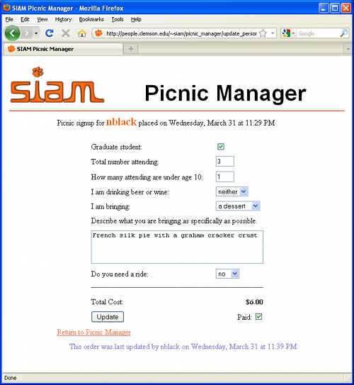

Instructions
Click here to return to the Picnic Manager.
When you click on a person's signup from the Picnic Manager screen you will be taken to another page which allows you to update the signup. The screenshot below shows a sample person. Please update the signups as soon as you can after receiving payment so that we can keep track of the money.

If someone needs you to update the information that they submitted when they signed up you can do so on this page. When someone pays you, check the paid box located below the cost. Once you are done updating, click the Update button and you will be returned to the Picnic Manger main screen.
Note that when you update a person's signup, your name will be attached to the signup so that if there are any questions we will know whom to contact.